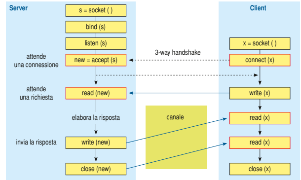
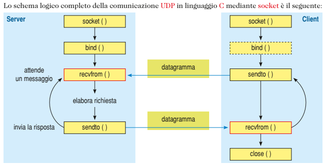

Le socket
Cos'è una socket
Una socket è un insieme di API standard per trasmettere e ricevere dati tramite la rete.La connessione può avvenire tra 2 porcessi, o tra un client e un server. successivamente verranno spiegate le varie tipologie di socket presenti
Tipologie di socket
Abbiamo tre tipi di socket Datagram,Stream e Raw;
- Datagram
- Stream
- Raw
Questa connessione utilizza il protcollo UDP l'arrivo e l'integrità dei dati non è garantita
Al contrario della precedente questo tipo di socket usa il protocollo TCP, quindi la connessione è più affidabile. Il client quindi indicherà la socket dove quando il server accetterà la richiesta verrà creato il canale di comunicazione
Questo tipo permette lo sviluppo di particolari protocolli di comunicazione
Processo di comunicazione
Quando un servizio è attivo, ha una porta e indrizzo ip per raggiungerli,il client quindi deve solo indicare la porta e l'indirizzo ip del server. Al server arriverà poi una richista dal client, il server poi soddisferà la richiesta del client e gli risponderà con il risultato della sua richiesta.

(immagini prese dal libro di tpsit)